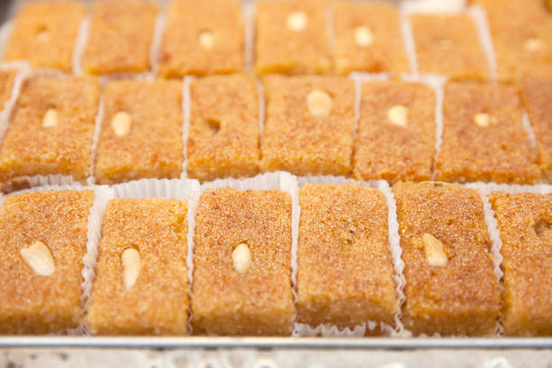

Egyptian Basbosa

Description
Egyptian Basbosa recipe info
| Prep Time |
Cook Time |
Total Time |
Servings |
Yield |
| 15 mins |
25 mins |
40 mins |
8 |
8 servings |
| Let's start |
Ingredients
- 1 ½ cups semolina
- ½ cup all-purpose flour
- 1 cup desiccated coconut
- 1 cup sugar
- 1 cup unsalted butter, melted
- 1 cup milk
- 1 teaspoon baking powder
- 1 tablespoon rosewater
- Blanched almonds for decoration
- Syrup:
- 2 cups sugar
- 1 ½ cups water
- 1 tablespoon lemon juice
- 1 tablespoon rosewater
Steps
- Preheat the oven to 180°C (350°F).
- In a large mixing bowl, combine semolina, all-purpose flour, desiccated coconut, sugar, melted butter, milk, baking powder, and rosewater. Mix well until all ingredients are fully combined.
- Grease a baking dish with butter or oil.
- Pour the basbosa mixture into the greased baking dish and spread it evenly.
- Using a sharp knife, score the top of the basbosa into diamond or square shapes.
- Place an almond in the center of each scored shape for decoration.
- Bake in the preheated oven for about 30-35 minutes or until the top turns golden brown.
- While the basbosa is baking, prepare the syrup. In a saucepan, combine sugar, water, lemon juice, and rosewater. Stir well and bring to a boil.
- Reduce the heat to low and simmer the syrup for about 10-15 minutes until it thickens slightly.
- Remove the baked basbosa from the oven and immediately pour the hot syrup over it.
- Allow the basbosa to cool and absorb the syrup for at least 1-2 hours before serving.
- Cut the basbosa into pieces and serve.
- Enjoy this delicious Egyptian dessert!